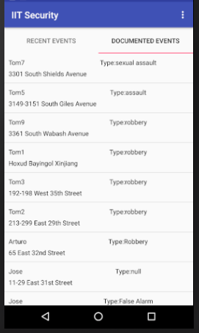
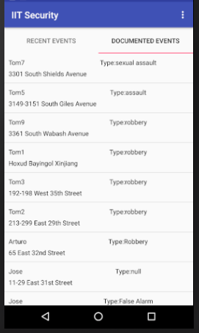
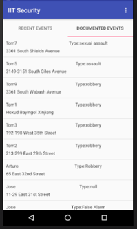

Travelling from the other side of the globe, I have come a far way from Malaysia to
achieve my goals and explore new opportunities. I began my journey in Oakton Community
College, where I dived into the basics of Computer Science. 2 years later I've transferred
to Illinois Institute of Technology to pursue my Bachelor's Degree in Computer Science. I
am currently a senior at Illinois Institute of Technology, and I've gained a vast knowledge
of techniques and practices in Computer Science and related fields.
What I'm Up To
Fall of 2018
During my semesters at Illinois Institute of Technology I don't have a great amount of free time
to learn many new skills or practice existing ones, but this semester I'm working (possibly) with
IIT's public safety department to improve and implement an app I worked on in my android app development
class which I have written about in the projects
section. Once I have graduated I plan on learning to do the following in my free time:
Solve the Rubik's Cube
Basic violin
Music editing
Basic skateboarding
3D drawing
Projects
IITSecurity
IITSecurity is an Android mobile application I helped build with my two team mates
Jose Casarrubios and Yael Torres in a mobile application development course. It aims
to improve security on campus by allowing students to call Public Safety at the push
of a button, as well as view a map of previous incidents on a map to identify and avoid
danger zones. This app can be used by the Public Safety as well, allowing them to view
and respond to recent incidents, with the app providing them with the quickest route to
a student in trouble.
The first three images are screenshots of the user interface for the student side
of the application.
The first image shows a large panic button, which appears as soon as a student
opens the app, allowing them to quickly tap on the button when in an emergency, which
calls public safety. The victim's precise location is also sent to public safety, in
case a student is unable to communicate during an emergency.
Since accidental tapping of the button can occur, we have implemented a timer that
waits five seconds before calling public safety, allowing students to cancel the call
if needed, as shown in the second image.
The third image displays another functionality for the student side of the application
that allows users to view a map of where previous incidents have occurred. This could be
used to help a student plan a journey ahead of time, allowing them to avoid areas with
higher crime potential. The pins on the map are color-coded, indicating the type of incident
that occurred (robbery, assault, sexual assault, etc.).

These next three images are screenshots of the user interface for the public safety
side of the application.
The first image shows the user the recent events that have occurred. These are events
that have very recently occurring or are currently taking place. If an event was recently
attended to with details of the crime known, public safety can input data about the incident
by tapping the info circle on the right side of the event, which will shift the event from
the recent events list to the documented events list. If it is an event that is taking place,
public safety can quickly respond by tapping on the event, which brings them to the second image.
The second screenshot shows up when the user has tapped on an event. They are then given
the quickest route on Google Maps to the victim's location.
The third image shows the documented events list, which are a list of events that have
occurred in the past. These are the events that appear on the map in the student side of the
application.
This is a working application and not just a designed interface. The only functionality
it currently lacks from being a usable app is the ability to call the authorities when the
panic button is pressed
Resume
Professional Summary
Dedicated Computer Science student focused on applying advanced technical expertise
to a position in software testing and development.
Skills & Abilities
Microsoft Office proficiency
Experience in web development
Knowledgeable of algorithms used in data analysis
Fluent in multiple programming languages:
Java
C
C++
Python
XML
HTML
CSS
Prolog
OCaml
Assembly
Experience in Android app development
Experience in database management and data analysis
Experience
January 2013 - June 2013
Web Design Intern, Petal World Sdn. Bhd. | Kuala Lumpur, Malaysia
Worked closely with social media team.
Updated and redesigned user experience for company website
Kept track of inventory on website
Education
August 2016 - Current
Bachelor of Science: Computer Science, Illinois Institute of Technology,
Chicago, IL
Recipient of Presidential Scholarship
Developed prototypes of practical mobile applications that serve to aid
in solving problems on campus
Member of the Association of Computing Machinery
Dean's List for Fall 2017 semester
August 2014 - May 2016
Bachelor of Science: Computer Science, Oakton Community College,
Skokie, IL
Recipient of Excellence Scholarship
Achieved 1st place in AMATYC Mathematics competitions during Fall 2014 semester
Member of Phi Theta Kappa Honor Society
Extras
Photography
Whenever I'm outside I have my phone ready to take pictures
of anything I find interesting or "Instagram worthy". I enjoy taking pictures of beautifull
sceneries and structures. I do not own a professional camera, and probably do not plan on
owning one any time soon because I'm not too much into photography for now.


 
